Answer: \((d)\ 3\)
Solution:
A metal shows photoelectric effect only if the incoming light gives enough energy to remove an electron from the metal surface.
That minimum required energy is called the work function, written as \(\phi\).
So the rule is: photoelectric effect occurs when photon energy \(\ge \phi\).
Wavelength given: \(\lambda = 300\ \text{nm} = 300 \times 10^{-9}\ \text{m}\)
Photon energy is: \(E = \dfrac{hc}{\lambda}\)
Using standard values:
So, \(E = \dfrac{6.63 \times 10^{-34} \times 3 \times 10^8}{300 \times 10^{-9}}\)
Converting into electron volts gives: \(E \approx 4.14\ \text{eV}\)
Now compare each one with incident energy \(4.14\ \text{eV}\):
The metals that show photoelectric effect are: Li, Mg and K
Therefore, the number of metals is \(3\).
Therefore:
\(\boxed{(d)\ 3}\)
Layman understanding:
JEE / NCERT takeaway:
\(h\nu = \phi + K_{\max}\)
\(h\nu = \phi\)
then electrons are just emitted with zero kinetic energy.
\(\nu_0 = \dfrac{\phi}{h}\)
\(\lambda_0 = \dfrac{hc}{\phi}\)
\(h\nu \ge \phi\)
or equivalently
\(\lambda \le \lambda_0\)
Useful shortcut for exams:
\(E(\text{eV}) \approx \dfrac{1240}{\lambda(\text{nm})}\)
\(E = \dfrac{1240}{300} \approx 4.13\ \text{eV}\)
1-minute solving trick:
\(E(\text{eV}) = \dfrac{1240}{\lambda(\text{nm})}\)
\(E \approx 4.13\ \text{eV}\)
Chapter / Topic / Subtopic:
Final exam-style answer:
For photoelectric effect to occur, photon energy must be at least equal to the work function: \(E \ge \phi\).
For radiation of wavelength \(300\ \text{nm}\), \(E = \dfrac{hc}{\lambda} \approx 4.14\ \text{eV}\).
Comparing with given work functions:
Hence, 3 metals show photoelectric effect.
\(\boxed{(d)\ 3}\)
Quick cheatsheet:
\(E = h\nu = \dfrac{hc}{\lambda}\)
\(E(\text{eV}) \approx \dfrac{1240}{\lambda(\text{nm})}\)
\(h\nu \ge \phi\)
\(\nu_0 = \dfrac{\phi}{h}\)
\(\lambda_0 = \dfrac{hc}{\phi}\)
\(K_{\max} = h\nu - \phi\)
Answer: \((b)\)
Solution:
\(K_{sp}\) is the solubility product. It tells us how much a salt can dissolve.
A smaller \(K_{sp}\) means the salt is less soluble.
So in this question, we just need to match each sulphide with its usual relative solubility.
Among these sulphides:
So the order of solubility product is:
\(\mathrm{HgS < PbS < ZnS < MnS}\) in terms of actual solubility, so in terms of \(K_{sp}\):
\(\mathrm{HgS}\) has the smallest \(K_{sp}\), and \(\mathrm{MnS}\) has the largest \(K_{sp}\).
From smallest to largest:
\(4.0 \times 10^{-53} < 8.0 \times 10^{-28} < 1.6 \times 10^{-24} < 2.5 \times 10^{-13}\)
So the matching becomes:
This corresponds to option \((b)\).
Therefore:
\(\boxed{A-(II),\ B-(I),\ C-(IV),\ D-(III)}\)
\(\boxed{(b)}\)
Layman understanding:
JEE / NCERT takeaway:
\(\mathrm{MX(s) \rightleftharpoons M^+(aq) + X^-(aq)}\)
\(K_{sp} = [\mathrm{M^+}][\mathrm{X^-}]\)
\(\mathrm{MS(s) \rightleftharpoons M^{2+}(aq) + S^{2-}(aq)}\)
\(K_{sp} = [\mathrm{M^{2+}}][\mathrm{S^{2-}}]\)
Why this trend is important in chemistry
1-minute solving trick:
\(\mathrm{HgS} \rightarrow\) smallest \(K_{sp}\)
\(\mathrm{MnS} \rightarrow\) largest \(K_{sp}\)
Chapter / Topic / Subtopic:
Final exam-style answer:
Smaller \(K_{sp}\) means lower solubility.
Among the given sulphides, the order of increasing \(K_{sp}\) is:
\(\mathrm{HgS < PbS < ZnS < MnS}\)
Therefore:
Hence the correct match is: \(A-(II),\ B-(I),\ C-(IV),\ D-(III)\)
\(\boxed{(b)}\)
Quick cheatsheet:
\(K_{sp}\) measures extent of dissolution of sparingly soluble salts.
\(\mathrm{MS(s) \rightleftharpoons M^{2+} + S^{2-}}\)
\(K_{sp} = [\mathrm{M^{2+}}][\mathrm{S^{2-}}]\)
\(\mathrm{HgS < PbS < ZnS < MnS}\) in \(K_{sp}\)
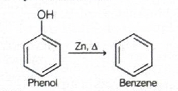
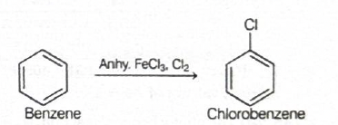
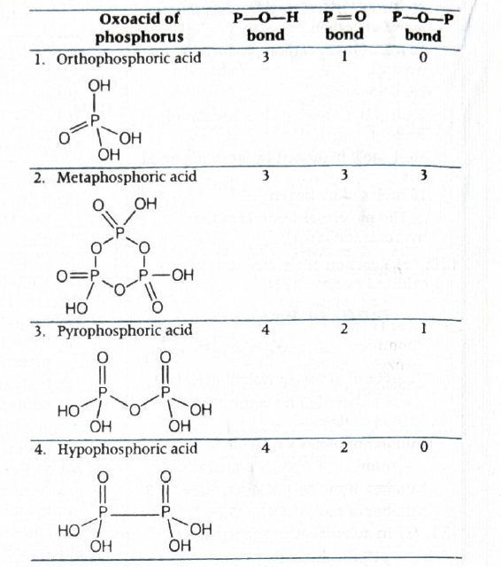
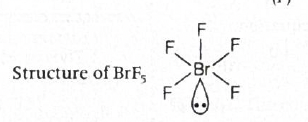
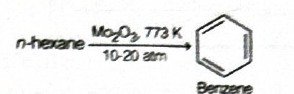
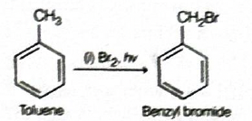
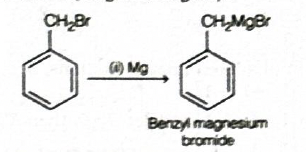
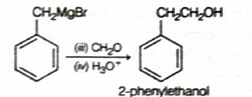
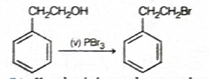
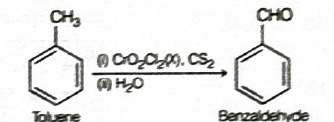
Oxidation of benzyl alcohol to benzaldehyde over heated copper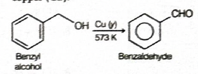
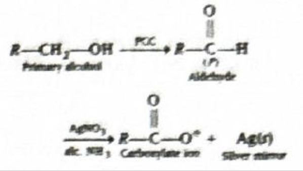
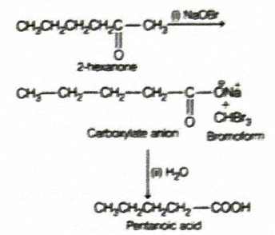
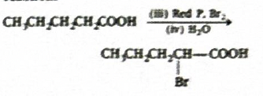
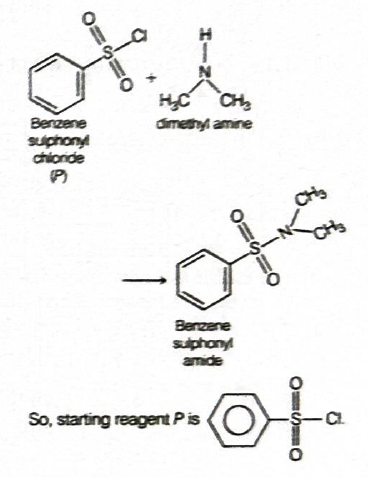